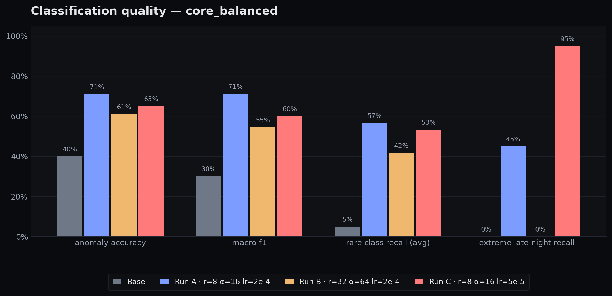
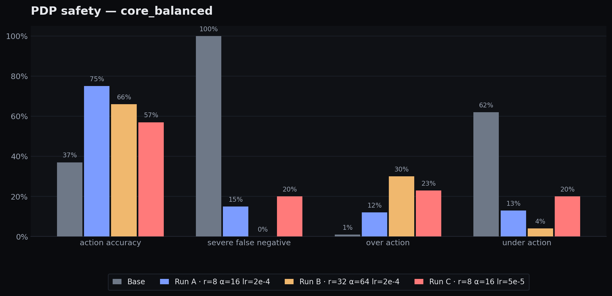
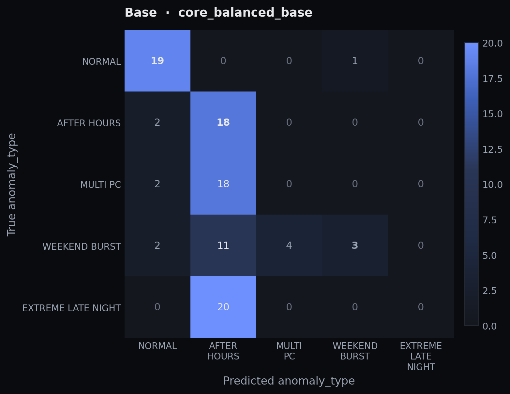
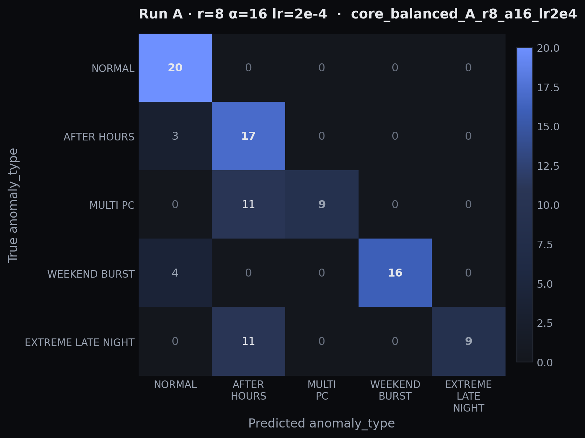
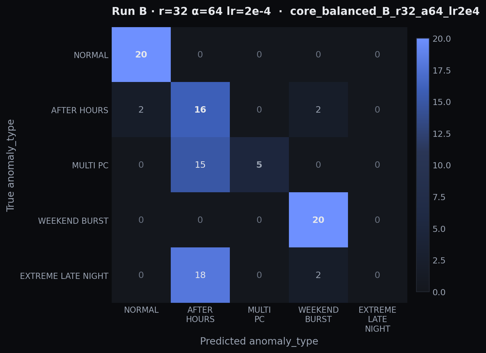
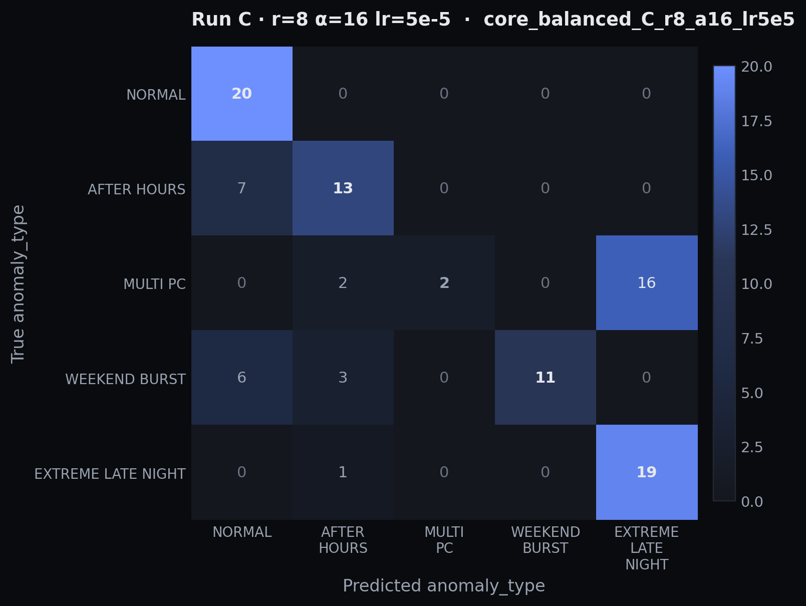

Teaching a 7B model to be a Zero-Trust Policy Decision Point
We fine-tuned Qwen2.5-7B-Instruct with three different LoRA configurations to turn behavioral telemetry into strict JSON security verdicts. This page walks through what we trained, what we compared, and what the numbers actually mean — including the part where bigger isn't better.
The setup
A Zero-Trust Policy Decision Point (PDP) doesn't ask "is this password right?" — it asks "given who this user is, where they're working from, when they're active, and how they normally behave, should this session be allowed?" The model's job is to read one row of behavioral telemetry and emit a structured verdict.
Input — one user-day record
User: EPI3052 | Day: 2010-03-01 Logons: 6 | Distinct PCs: 6 After-hours events: 10 Weekend events: 0 First hour: 2 | Last hour: 23 Hour span: 21
Required output — strict JSON
{
"risk_level": "CRITICAL",
"anomaly_type": "EXTREME_LATE_NIGHT",
"device_trust": "UNMANAGED",
"recommended_action": "BLOCK_AND_ALERT",
"confidence": 0.94,
"rationale": "…"
}
Why this is hard for a base LLM
A base Qwen model is a generalist — like a brand-new security guard on day one. Ask "is this person suspicious?"
and you'll get a thoughtful paragraph. But a real SOC pipeline doesn't read paragraphs;
it reads forms. Fine-tuning is the part where the guard learns the company's exact intake form
and exact escalation vocabulary — BLOCK_AND_ALERT, not "you should probably block this and alert someone."
The training corpus is deliberately imbalanced
Real Zero-Trust telemetry is imbalanced by physics, not by accident: the events that matter most for security are the rarest. We faithfully reproduced that imbalance in the training set so the experiment exposes the real failure mode — not a sanitized one.
| Class | Train examples | Share | Role | Distribution |
|---|
The evaluation benchmarks were re-sampled from the same source file used for training
(ztn_sft.json). So this is an internal, repeatable comparison across LoRA configs —
not a fully held-out generalization test. The relative comparisons are valid; absolute numbers are
optimistic.
What we're comparing
Four models. One variable changed at a time. Same prompts, same decoding (temperature=0),
same JSON schema validator. Comparing four LoRA configurations the way a chef compares four
pinches of salt in the same soup recipe.
No fine-tuning
| LoRA rank | — |
| LoRA alpha | — |
| Learning rate | — |
Reference point. Tells us how much fine-tuning is even doing.
r=8, α=16, lr=2e-4
| LoRA rank | 8 |
| LoRA alpha | 16 |
| Learning rate | 2e-4 |
The default that most LoRA tutorials would recommend.
r=32, α=64, lr=2e-4
| LoRA rank | 32 |
| LoRA alpha | 64 |
| Learning rate | 2e-4 |
Tests the "give it more capacity" hypothesis for rare classes.
r=8, α=16, lr=5e-5
| LoRA rank | 8 |
| LoRA alpha | 16 |
| Learning rate | 5e-5 |
Tests whether slower learning yields a smoother decision boundary.
What does "rank 8 vs rank 32" actually mean?
Think of the base model as a giant brick wall. Full fine-tuning would repaint every brick — expensive and risky. LoRA instead glues a thin removable panel over the wall and only paints the panel. The rank is the thickness of that panel: rank 8 is a sheet of paper, rank 32 is a poster board. A thicker panel can hold more new patterns — but a thicker panel can also overwrite the underlying wall more aggressively. Run B tests whether thicker is better; Run C tests whether painting more slowly is.
Three benchmark slices, three questions
core_balanced · 100 ex
20 examples per class. The "ordinary performance" benchmark. Macro-F1 here is meaningful because every class has equal support.
rare_stress · 35 ex
Only the three rare classes (15 MULTI_PC, 15 WEEKEND_BURST, 5 EXTREME). The security-critical benchmark — does fine-tuning catch the events that matter?
screenshot_cases · 5 ex
One example per class, hand-picked. Too small for statistics, useful for qualitative inspection and report screenshots.
The numbers — pick a benchmark
The classification and safety charts below respond to this selector. (Schema quality is the same across all benchmarks — see the strip widget at the top of this section.) Benchmarks behave differently, and that's the point: a model can ace the balanced benchmark and fail the rare-stress one.
Layer 2 · Classification — is the verdict label right?
Anomaly accuracy is overall hit rate. Macro F1 punishes the model for missing rare classes. Rare-recall is the average recall on the three rare classes. EXTREME recall is the single most security-critical metric — did the model catch the rarest, most dangerous class?

Layer 3 · PDP safety — even when the label is wrong, is the action safe?
Here's where security diverges from classification. A model can predict the wrong anomaly_type but still recommend the right action — a "label-wrong, action-safe" failure is operationally fine. The opposite — predicting a safe action on a critical event — is the worst possible outcome. That's the severe false negative rate.

A true HIGH/CRITICAL event the model labels as LOW/MEDIUM risk. In a Zero-Trust pipeline, this means a real intrusion gets the response of a routine low-risk logon. Base model: catastrophic. Run B: zero (but pays in over-action). Run A: 15%. Run C: 20%.
The model blocks something that shouldn't be blocked. Operationally annoying but not unsafe. Run B's block-heavy behavior reaches a 30% over-action rate on core_balanced and 63% on rare_stress.
Per-run summary table
| Run | Anomaly acc | Macro F1 | Rare recall | EXTREME recall | Action acc | Severe FN | Over-action |
|---|
Where the predictions go wrong
A confusion matrix is a heatmap of "for ground-truth class X, what did the model actually say?" The diagonal is correct. Off-diagonal cells tell you the shape of the failure — not just that it failed, but how it failed.
Reading a confusion matrix
Imagine grading a rookie radiologist on 100 X-rays. The diagonal is "they got it right." But if every broken rib they read as a bruise, the off-diagonal cell at (rib → bruise) lights up. That's not a "they're 40% accurate" story — it's a "they're systematically downgrading rib fractures" story. That second story is the one that matters in security too: Run C often upgrades MULTI_PC into EXTREME_LATE_NIGHT (over-classifying), while the base model often collapses rare/severe cases into AFTER_HOURS (under-classifying).
Base
base
Run A
r=8 α=16 lr=2e-4
Run B
r=32 α=64 lr=2e-4
Run C
r=8 α=16 lr=5e-5
Takeaways
Best overall balance
71% anomaly accuracy, 71% macro F1, 75% action accuracy on core_balanced. The most boring configuration — vanilla rank 8, normal LR — is the one that works. This is the model to ship as the main fine-tuned PDP.
More capacity didn't help
4× the adapter capacity, worse across the board. EXTREME recall fell from 45% (A) to 0%. The extra capacity learned to over-escalate — severe-FN of 0% looks great, but over-action climbs to 30%/63%.
Trade rare-class recall for class collapse
Lower LR pushes EXTREME recall to 95% on core_balanced — best in class — but collapses MULTI_PC into EXTREME (16 of 20). Useful evidence about the LR knob; not the model to ship.
Fine-tuning substantially improved schema-compliant PDP decision generation over the base
Qwen2.5-7B-Instruct. The baseline LoRA setting (r=8, α=16, lr=2e-4) produced the
best overall balance of anomaly classification, rare-class recall, and action accuracy.
Increasing LoRA rank did not improve this task; lowering the learning rate improved
EXTREME recall but caused over-prediction of that class and worse MULTI_PC behavior.
Because benchmark examples come from the same source as the training data, these are
internal comparisons rather than held-out generalization claims.
Two failure modes, one root cause
DBSCAN clustering (the upstream half of this project) succeeds precisely because anomalies are rare and isolated — density semantics turn rarity into signal. Supervised fine-tuning of a language model fails for the same reason — with only 25 EXTREME_LATE_NIGHT training examples, the model can't reliably discriminate that class from its nearest neighbors. The asymmetry is the whole point: rarity is a feature for unsupervised methods and a bug for supervised ones.
The honest interpretation of the LoRA sweep: parameter tuning changes the shape of the decision boundary, but the dominant limitation is data scarcity in the critical classes. Run B and Run C are not "worse" — they're showing us what each knob actually controls. Run A wins because it's the only configuration where none of the knobs is turned far enough to break something.